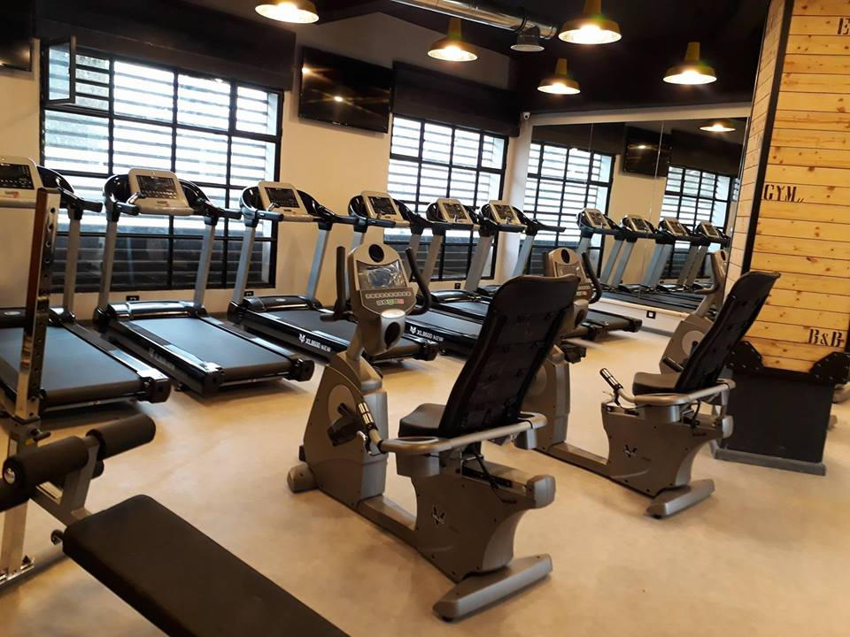

Foot Academy
GALAXY FOOT ACADEMY est une section « initiation football» visant à encadrer et soutenir les enfants à partir de 04 ans et à leur permettre de pouvoir commencer à jouer au football sans obligatoirement être affilié à un club de football. Sa finalité n‘est pas uniquement sportive, mais aussi éducative et sociale. C’est un complément important pour la famille et l’école, et un moyen de compréhension, d’intégration et de réussiteest une section « initiation football» visant à encadrer et soutenir les enfants à partir de 04 ans et à leur permettre de pouvoir commencer à jouer au football sans obligatoirement être affilié à un club de football. Sa finalité n‘est pas uniquement sportive, mais aussi éducative et sociale. C’est un complément important pour la famille et l’école, et un moyen de compréhension, d’intégration et de réussite.
Vos enfants seront pris en charge par des entraîneurs hautement qualifiés. L'initiation est évidement basée sur l'apprentissage de la maîtrise de balle et de la psychomotricité. Notre but c’est d’améliorer chaque joueur individuellement et techniquement.
Espace Cardio
Composé de 2 salles de cours et une salle RPM. L'espace cardio-training est équipé par des rameurs, vélos, elliptiques, tapis de course, etc pour développer votre endurance, perdre du poids et améliorer votre condition physique.
Espace de Fitness
Galaxy Gym vous propose des cours du lundi au dimanche dans son espace Fitness. Tous les cours sont encadrés par des professionnels : Abdos-fessiers, Barres-Haltères, Gym Silhouette,… Pour vous tonifier, modeler votre silhouette, avoir une meilleure posture… Zumba, Cardio Move, Step, danse afro. Pour améliorer votre condition physique, vous dépenser, bruler les calories, tout en vous amusant. Streching, Gym Strech. Pour gagner en souplesse, favoriser la récupération, mieux préparer votre corps à l’exercice physique ou simplement vous détendre. Le Circuit-Training, un cours avec plusieurs ateliers pour travailler à la fois cardio, force et explosivité.